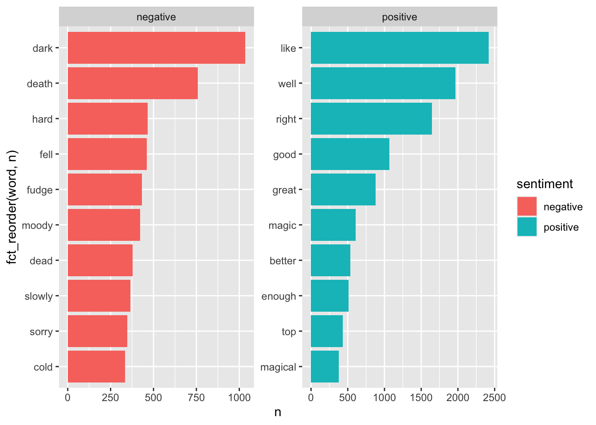
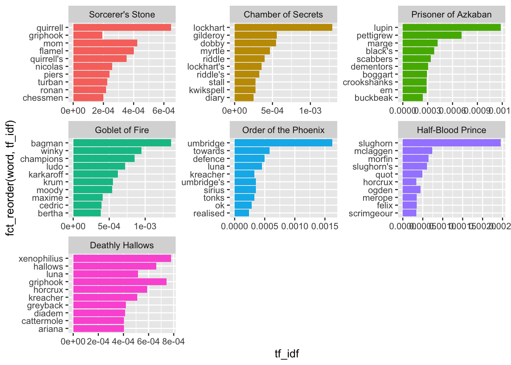
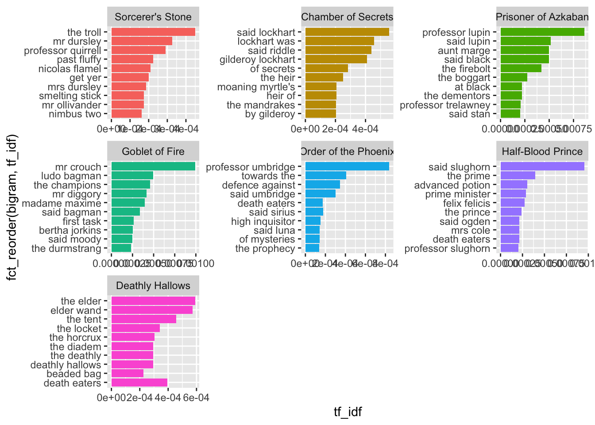
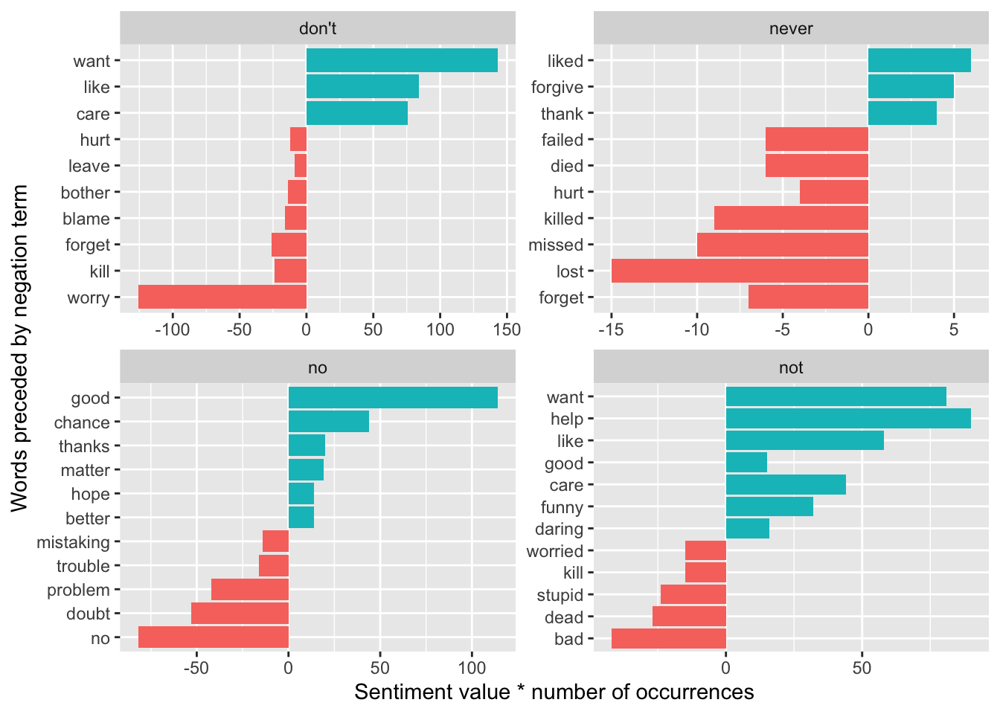

Attaching package: 'RCurl'
The following object is masked from 'package:tidyr':
complete
library(ggraph)library(igraph)
Attaching package: 'igraph'
The following objects are masked from 'package:lubridate':
%--%, union
The following objects are masked from 'package:dplyr':
as_data_frame, groups, union
The following objects are masked from 'package:purrr':
compose, simplify
The following object is masked from 'package:tidyr':
crossing
The following object is masked from 'package:tibble':
as_data_frame
The following objects are masked from 'package:stats':
decompose, spectrum
The following object is masked from 'package:base':
union
library(tm)
Loading required package: NLP
Attaching package: 'NLP'
The following object is masked from 'package:ggplot2':
annotate
library(topicmodels)
On Your Own: Harry Potter
The potter_untidy dataset includes the text of 7 books of the Harry Potter series by J.K. Rowling. For a brief overview of the books (or movies), see this quote from Wikipedia:
Harry Potter is a series of seven fantasy novels written by British author J. K. Rowling. The novels chronicle the lives of a young wizard, Harry Potter, and his friends Hermione Granger and Ron Weasley, all of whom are students at Hogwarts School of Witchcraft and Wizardry. The main story arc concerns Harry’s conflict with Lord Voldemort, a dark wizard who intends to become immortal, overthrow the wizard governing body known as the Ministry of Magic, and subjugate all wizards and Muggles (non-magical people).
Homework Problems
What words contribute the most to negative and positive sentiment scores? Show a faceted bar plot of the top 10 negative and the top 10 positive words (according to the “bing” lexicon) across the entire series.
bing_sentiments <-get_sentiments(lexicon ="bing")potter_tidy |>inner_join(bing_sentiments) |>#adds sentiment columncount(sentiment, word, sort =TRUE) |>group_by(sentiment) |>slice_max(n, n =10) |>ungroup() |>ggplot(aes(x =fct_reorder(word, n), y = n, fill = sentiment)) +geom_col() +coord_flip() +facet_wrap(~ sentiment, scales ="free")
Joining with `by = join_by(word)`
Warning in inner_join(potter_tidy, bing_sentiments): Detected an unexpected many-to-many relationship between `x` and `y`.
ℹ Row 41432 of `x` matches multiple rows in `y`.
ℹ Row 2698 of `y` matches multiple rows in `x`.
ℹ If a many-to-many relationship is expected, set `relationship =
"many-to-many"` to silence this warning.

Find a list of the top 10 words associated with “fear” and with “trust” (according to the “nrc” lexicon) across the entire series.
Create a wordcloud with the top 20 negative words and the top 20 positive words in the Harry Potter series according to the bing lexicon. The words should be sized by their respective counts and colored based on whether their sentiment is positive or negative. (Feel free to be resourceful and creative to color words by a third variable!)
bing_potter <- potter_tidy |>inner_join(bing_sentiments) |>count(sentiment, word, sort =TRUE) |>group_by(sentiment) |>slice_max(n, n =10) |>mutate(color =ifelse(sentiment =="negative", "dodgerblue", "gold"), #adds a color column for plottingn = n/max(n)) #evens the frequency across negative and positive values for plotting
Joining with `by = join_by(word)`
Warning in inner_join(potter_tidy, bing_sentiments): Detected an unexpected many-to-many relationship between `x` and `y`.
ℹ Row 41432 of `x` matches multiple rows in `y`.
ℹ Row 2698 of `y` matches multiple rows in `x`.
ℹ If a many-to-many relationship is expected, set `relationship =
"many-to-many"` to silence this warning.
Make a faceted bar chart to compare the positive/negative sentiment trajectory over the 7 Harry Potter books. You should have one bar per chapter (thus chapter becomes the index), and the bar should extend up from 0 if there are more positive than negative words in a chapter (according to the “bing” lexicon), and it will extend down from 0 if there are more negative than positive words.
Repeat (5) using a faceted scatterplot to show the average sentiment score according to the “afinn” lexicon for each chapter. (Hint: use mutate(chapter_factor = factor(chapter)) to treat chapter as a factor variable.)
# A tibble: 67,876 × 6
word title n tf idf tf_idf
<chr> <fct> <int> <dbl> <dbl> <dbl>
1 the Order of the Phoenix 11740 0.0454 0 0
2 the Deathly Hallows 10335 0.0523 0 0
3 the Goblet of Fire 9305 0.0485 0 0
4 the Half-Blood Prince 7508 0.0438 0 0
5 to Order of the Phoenix 6518 0.0252 0 0
6 and Order of the Phoenix 6189 0.0239 0 0
7 and Deathly Hallows 5510 0.0279 0 0
8 of Order of the Phoenix 5332 0.0206 0 0
9 the Prisoner of Azkaban 4990 0.0474 0 0
10 and Goblet of Fire 4959 0.0258 0 0
# ℹ 67,866 more rows
potter_tfidf |>arrange(-tf_idf)
# A tibble: 67,876 × 6
word title n tf idf tf_idf
<chr> <fct> <int> <dbl> <dbl> <dbl>
1 slughorn Half-Blood Prince 335 0.00196 1.25 0.00245
2 umbridge Order of the Phoenix 496 0.00192 0.847 0.00162
3 bagman Goblet of Fire 208 0.00108 1.25 0.00136
4 lockhart Chamber of Secrets 197 0.00231 0.560 0.00129
5 lupin Prisoner of Azkaban 369 0.00351 0.336 0.00118
6 winky Goblet of Fire 145 0.000756 1.25 0.000947
7 champions Goblet of Fire 84 0.000438 1.95 0.000852
8 xenophilius Deathly Hallows 79 0.000400 1.95 0.000778
9 griphook Deathly Hallows 117 0.000592 1.25 0.000742
10 mclaggen Half-Blood Prince 65 0.000379 1.95 0.000738
# ℹ 67,866 more rows
potter_tfidf |>group_by(title) |>arrange(desc(tf_idf)) |>slice_max(tf_idf, n =10) |>ungroup() |>ggplot(aes(x =fct_reorder(word, tf_idf), y = tf_idf, fill = title)) +geom_col(show.legend =FALSE) +coord_flip() +facet_wrap(~title, scales ="free")

Repeat (7) to show the top 10 2-word combinations that distinguish each book.
# A tibble: 339,536 × 2
bigram n
<chr> <int>
1 of the 4895
2 in the 3572
3 said harry 2626
4 he was 2490
5 at the 2435
6 to the 2386
7 on the 2360
8 he had 2138
9 it was 2123
10 out of 1911
# ℹ 339,526 more rows
# A tibble: 339,536 × 3
word1 word2 n
<chr> <chr> <int>
1 of the 4895
2 in the 3572
3 said harry 2626
4 he was 2490
5 at the 2435
6 to the 2386
7 on the 2360
8 he had 2138
9 it was 2123
10 out of 1911
# ℹ 339,526 more rows
# A tibble: 339,536 × 2
bigram n
<chr> <int>
1 of the 4895
2 in the 3572
3 said harry 2626
4 he was 2490
5 at the 2435
6 to the 2386
7 on the 2360
8 he had 2138
9 it was 2123
10 out of 1911
# ℹ 339,526 more rows
# A tibble: 523,142 × 6
title bigram n tf idf tf_idf
<fct> <chr> <int> <dbl> <dbl> <dbl>
1 Goblet of Fire mr crouch 152 0.000792 1.25 0.000993
2 Half-Blood Prince said slughorn 84 0.000491 1.95 0.000954
3 Prisoner of Azkaban professor lupin 107 0.00102 0.847 0.000861
4 Order of the Phoenix professor umbridge 173 0.000669 1.25 0.000838
5 Deathly Hallows the elder 60 0.000304 1.95 0.000591
6 Deathly Hallows elder wand 58 0.000294 1.95 0.000571
7 Chamber of Secrets said lockhart 38 0.000445 1.25 0.000558
8 Prisoner of Azkaban said lupin 97 0.000922 0.560 0.000516
9 Prisoner of Azkaban aunt marge 42 0.000399 1.25 0.000500
10 Prisoner of Azkaban said black 27 0.000257 1.95 0.000499
# ℹ 523,132 more rows
bigram_tf_idf |>group_by(title) |>arrange(desc(tf_idf)) |>slice_max(tf_idf, n =10) |>ungroup() |>ggplot(aes(x =fct_reorder(bigram, tf_idf), y = tf_idf, fill = title)) +geom_col(show.legend =FALSE) +coord_flip() +facet_wrap(~title, scales ="free")

Find which words contributed most in the “wrong” direction using the afinn sentiment combined with how often a word appears among all 7 books. Come up with a list of 4 negation words, and for each negation word, illustrate the words associated with the largest “wrong” contributions in a faceted bar plot.
# A tibble: 401 × 4
word1 word2 n value
<chr> <chr> <int> <dbl>
1 don't want 143 1
2 no no 82 -1
3 not want 81 1
4 no doubt 53 -1
5 not help 45 2
6 don't like 42 2
7 don't worry 42 -3
8 don't care 38 2
9 no good 38 3
10 not like 29 2
# ℹ 391 more rows
negated_words_potter |>mutate(contribution = n * value) |>arrange(desc(abs(contribution))) |>group_by(word1) |>slice_max(abs(contribution), n =10) |>ungroup() |>mutate(word2 =reorder(word2, contribution)) |>ggplot(aes(n * value, word2, fill = n * value >0)) +geom_col(show.legend =FALSE) +facet_wrap(~word1, scales ="free") +labs(x ="Sentiment value * number of occurrences",y ="Words preceded by negation term")

Select a set of 4 “interesting” terms and then use the Phi coefficient to find and plot the 6 words most correlated with each of your “interesting” words. Start by dividing potter_tidy into 80-word sections and then remove names and spells and stop words.
potter_section_words <- potter_tidy |>mutate(section =row_number() %/%80) |>#separates words into 80-word sectionsfilter(!word %in% stop_words$word,!word %in% potter_names_long$name,!word %in% potter_spells$spell)potter_section_words
# A tibble: 346,550 × 5
title chapter book_num word section
<fct> <dbl> <dbl> <chr> <dbl>
1 Sorcerer's Stone 1 1 boy 0
2 Sorcerer's Stone 1 1 lived 0
3 Sorcerer's Stone 1 1 privet 0
4 Sorcerer's Stone 1 1 drive 0
5 Sorcerer's Stone 1 1 proud 0
6 Sorcerer's Stone 1 1 perfectly 0
7 Sorcerer's Stone 1 1 normal 0
8 Sorcerer's Stone 1 1 people 0
9 Sorcerer's Stone 1 1 expect 0
10 Sorcerer's Stone 1 1 involved 0
# ℹ 346,540 more rows
# count words co-occuring within sectionslibrary(widyr)word_pairs <- potter_section_words |>pairwise_count(word, section, sort =TRUE)word_pairs
# A tibble: 5,345,536 × 3
item1 item2 n
<chr> <chr> <dbl>
1 eaters death 301
2 death eaters 301
3 looked eyes 295
4 eyes looked 295
5 looked time 241
6 time looked 241
7 harry's looked 227
8 looked harry's 227
9 professor looked 224
10 looked professor 224
# ℹ 5,345,526 more rows
# filter for at least relatively common words firstword_cors <- potter_section_words |>group_by(word) |>filter(n() >=10) |>pairwise_cor(word, section, sort =TRUE)word_cors
Use LDA to fit a 2-topic model to all 7 Harry Potter books. Be sure to remove names, spells, and stop words before running your topic models. (a) Make a plot to illustrate words with greatest difference between two topics, using log ratio. (b) Print a table with the gamma variable for each document and topic. Based on (a) and (b), can you interpret what the two topics represent?
# A tibble: 67,876 × 3
word title n
<chr> <fct> <int>
1 the Order of the Phoenix 11740
2 the Deathly Hallows 10335
3 the Goblet of Fire 9305
4 the Half-Blood Prince 7508
5 to Order of the Phoenix 6518
6 and Order of the Phoenix 6189
7 and Deathly Hallows 5510
8 of Order of the Phoenix 5332
9 the Prisoner of Azkaban 4990
10 and Goblet of Fire 4959
# ℹ 67,866 more rows
potter_books_dtm <- book_word_count_potter |>filter(!word %in% stop_words$word,!word %in% potter_names_long$name,!word %in% potter_spells$spell) |>cast_dtm(title, word, n)potter_books_lda <-LDA(potter_books_dtm, k =2, control =list(seed =1234))potter_books_lda
# A tibble: 46,932 × 3
topic term beta
<int> <chr> <dbl>
1 1 professor 0.00703
2 2 professor 0.00463
3 1 wand 0.00585
4 2 wand 0.00368
5 1 looked 0.00885
6 2 looked 0.00482
7 1 voice 0.00310
8 2 voice 0.00516
9 1 time 0.00330
10 2 time 0.00647
# ℹ 46,922 more rows
# Find the most common words within each topicpotter_books_top_terms <- potter_books_topics |>group_by(topic) |>slice_max(beta, n =10) |>ungroup() |>arrange(topic, -beta)potter_books_top_terms |>mutate(term =reorder_within(term, beta, topic)) |>ggplot(aes(beta, term, fill =factor(topic))) +geom_col(show.legend =FALSE) +facet_wrap(~ topic, scales ="free") +scale_y_reordered()
# A tibble: 206 × 4
term topic1 topic2 log_ratio
<chr> <dbl> <dbl> <dbl>
1 professor 0.00703 0.00463 -0.603
2 wand 0.00585 0.00368 -0.668
3 looked 0.00885 0.00482 -0.875
4 voice 0.00310 0.00516 0.735
5 time 0.00330 0.00647 0.973
6 door 0.00287 0.00458 0.673
7 head 0.00375 0.00390 0.0543
8 harry's 0.00576 0.00232 -1.31
9 eyes 0.00688 0.00254 -1.44
10 death 0.00210 0.00226 0.110
# ℹ 196 more rows
#uses log ratio to find difference between topicsbeta_wide_potter |>arrange(desc(abs(log_ratio))) |>slice_max(abs(log_ratio), n =20) |>mutate(term =reorder(term, log_ratio)) |>ggplot(aes(log_ratio, term, fill = log_ratio >0)) +geom_col(show.legend =FALSE) +labs(x ="Log ratio of Beta values",y ="Words in Harry Potter books")
# A tibble: 14 × 3
document topic gamma
<chr> <int> <dbl>
1 Sorcerer's Stone 1 0.499
2 Chamber of Secrets 1 0.476
3 Prisoner of Azkaban 1 0.505
4 Goblet of Fire 1 0.465
5 Order of the Phoenix 1 0.469
6 Half-Blood Prince 1 0.486
7 Deathly Hallows 1 0.505
8 Sorcerer's Stone 2 0.501
9 Chamber of Secrets 2 0.524
10 Prisoner of Azkaban 2 0.495
11 Goblet of Fire 2 0.535
12 Order of the Phoenix 2 0.531
13 Half-Blood Prince 2 0.514
14 Deathly Hallows 2 0.495
#Prisoner of Azkaban and Deathly Hallows vs Sorcerer's Stone, Chamber of Secrets, Goblet of Fire, Order of the Phoenix, and Half-Blood Prince? It just divided the 7 books into two groups based on similarity?